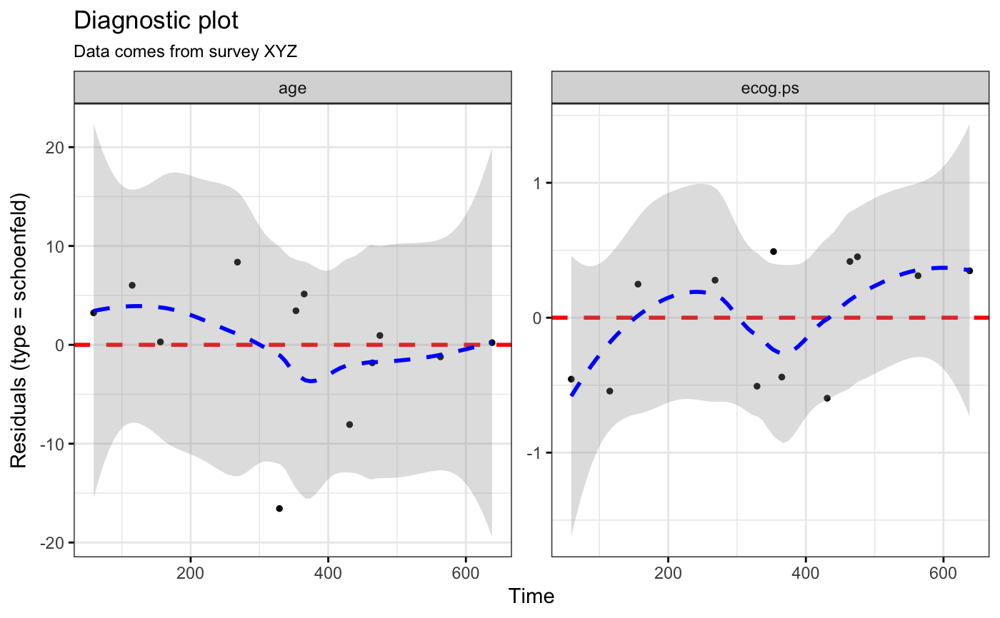
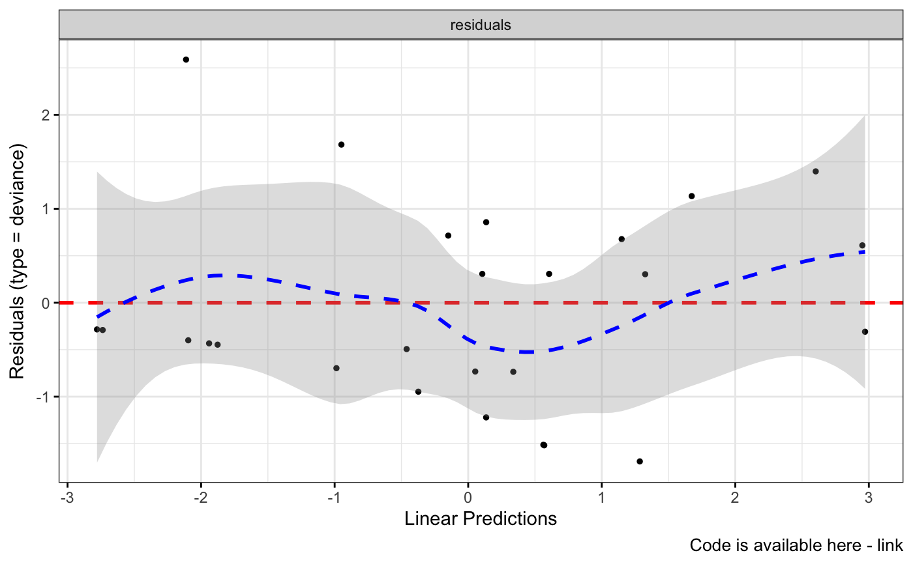
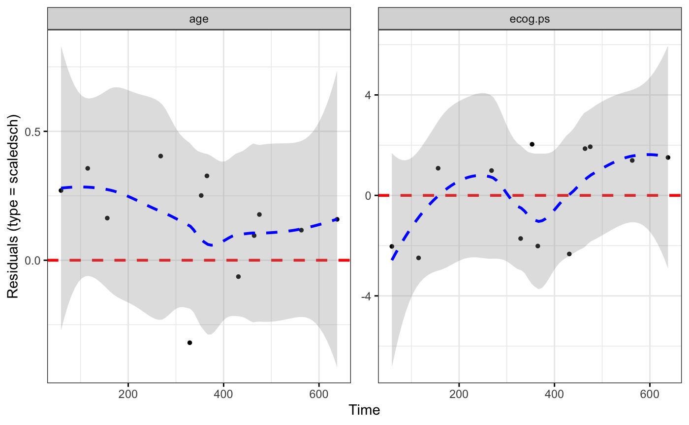

Diagnostic Plots for Cox Proportional Hazards Model with ggplot2
Source:R/ggcoxdiagnostics.R
ggcoxdiagnostics.RdDisplays diagnostics graphs presenting goodness of Cox Proportional Hazards Model fit, that can be calculated with coxph function.
ggcoxdiagnostics( fit, type = c("martingale", "deviance", "score", "schoenfeld", "dfbeta", "dfbetas", "scaledsch", "partial"), ..., linear.predictions = type %in% c("martingale", "deviance"), ox.scale = ifelse(linear.predictions, "linear.predictions", "observation.id"), hline = TRUE, sline = TRUE, sline.se = TRUE, hline.col = "red", hline.size = 1, hline.alpha = 1, hline.yintercept = 0, hline.lty = "dashed", sline.col = "blue", sline.size = 1, sline.alpha = 0.3, sline.lty = "dashed", point.col = "black", point.size = 1, point.shape = 19, point.alpha = 1, title = NULL, subtitle = NULL, caption = NULL, ggtheme = ggplot2::theme_bw() )
Arguments
| fit | an object of class coxph.object - created with coxph function. |
|---|---|
| type | the type of residuals to present on Y axis of a diagnostic plot.
The same as in residuals.coxph: character string indicating the type of
residual desired. Possible values are |
| ... | further arguments passed to |
| linear.predictions | (deprecated, see |
| ox.scale | one value from |
| hline | a logical - should the horizontal line be added to highlight the |
| sline, sline.se | a logical - should the smooth line be added to highlight the local average for residuals. |
| hline.col, hline.size, hline.lty, hline.alpha, hline.yintercept | color, size, linetype, visibility and Y-axis coordinate to be used for geom_hline.
Used only when |
| sline.col, sline.size, sline.lty, sline.alpha | color, size, linetype and visibility to be used for geom_smooth.
Used only when |
| point.col, point.size, point.shape, point.alpha | color, size, shape and visibility to be used for points. |
| title, subtitle, caption | main title, subtitle and caption. |
| ggtheme | function, ggplot2 theme name. Default value is ggplot2::theme_bw().
Allowed values include ggplot2 official themes: see |
Value
Returns an object of class ggplot.
Functions
ggcoxdiagnostics: Diagnostic Plots for Cox Proportional Hazards Model with ggplot2
Examples
library(survival) coxph.fit2 <- coxph(Surv(futime, fustat) ~ age + ecog.ps, data=ovarian) ggcoxdiagnostics(coxph.fit2, type = "deviance")#>ggcoxdiagnostics(coxph.fit2, type = "schoenfeld", title = "Diagnostic plot")#>ggcoxdiagnostics(coxph.fit2, type = "deviance", ox.scale = "time")#> Warning: ox.scale='time' works only with type=schoenfeld/scaledsch#>ggcoxdiagnostics(coxph.fit2, type = "schoenfeld", ox.scale = "time", title = "Diagnostic plot", subtitle = "Data comes from survey XYZ", font.subtitle = 9)#>ggcoxdiagnostics(coxph.fit2, type = "deviance", ox.scale = "linear.predictions", caption = "Code is available here - link", font.caption = 10)#>ggcoxdiagnostics(coxph.fit2, type = "schoenfeld", ox.scale = "observation.id")#>ggcoxdiagnostics(coxph.fit2, type = "scaledsch", ox.scale = "time")#>